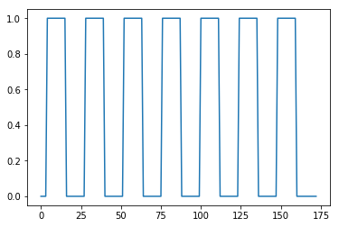
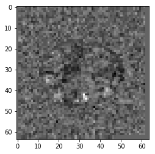

Correlation r value for each voxel in the brain
In this exercise, we will take each voxel time course in the brain, and calculate a correlation between the task-on / task-off vector and the voxel time course. We then make a new 3D volume that contains correlation values for each voxel.
# Our usual set-up
import numpy as np
import matplotlib.pyplot as plt
%matplotlib inline
# Display array values to 4 digits of precision
np.set_printoptions(precision=4, suppress=True)
import nibabel as nib
Load the ds114_sub009_t2r1.nii image, and calculate the number of
volumes:
# Load the ds114_sub009_t2r1.nii image
img = nib.load('ds114_sub009_t2r1.nii')
data = img.get_fdata()
# Show shape
data.shape
(64, 64, 30, 173)
TR = 2.5 # time between volumes
Create a vector of ones and zeros, with one value for each scan. 1 means the scan was during the activation block, and 0 means the scan was during a rest block.
#- Make new zero vector for neural prediction
neural_prediction = np.zeros(img.shape[-1])
#- Read the file into an array called "task".
#- "task" should have 3 columns (onset, duration, amplitude)
task = np.loadtxt('ds114_sub009_t2r1_cond.txt')
#- Select first two columns and divide by TR
ons_durs = task[:, :2] / TR
#- Fill in values of 1 for positions of on blocks in time course
# Convert onsets, durations to integers first
ons_durs = np.round(ons_durs).astype(int)
for onset, duration in ons_durs:
neural_prediction[onset:onset + duration] = 1
# Plot the on-off values for each volume
plt.plot(neural_prediction);

Using slicing, drop the first volume, and the corresponding on-off value. This is to drop the T1 artifact in the first scan.
# Drop the first 4 volumes, and corresponding on-off values
data = data[:, :, :, 1:]
neural_prediction = neural_prediction[1:]
The shape of an individual volume in the FMRI time-series:
# Make array to hold the correlation values
volume_shape = data.shape[:-1]
volume_shape
(64, 64, 30)
Make a single brain-volume-sized array of all zero to hold the correlations:
# Make array to hold the correlation values
correlations = np.zeros(volume_shape)
- Loop over all voxel indices on the first, then second, then third dimension.
- Extract the voxel time courses at each voxel coordinate in the image.
- Get the correlation between the voxel time course and neural prediction.
- Fill in the value in the correlations array.
# Loop over all voxel indices
for i_index in range(volume_shape[0]):
for j_index in range(volume_shape[1]):
for k_index in range(volume_shape[2]):
# Extract the voxel time courses at each voxel
time_course = data[i_index, j_index, k_index, :]
if np.all(time_course) == 0:
continue # All zeros in time course, go to next voxel
# Get correlation value for voxel time course with on-off vector
cc = np.corrcoef(neural_prediction, time_course)[1, 0]
# Fill value in the correlations array
correlations[i_index, j_index, k_index] = cc
Plot the middle slice of the third axis from the correlations array. Can you see any sign of activity (high correlation) in the frontal lobe?
# Plot the 20th slice of the correlation image
plt.imshow(correlations[:, :, 19], cmap='gray');
